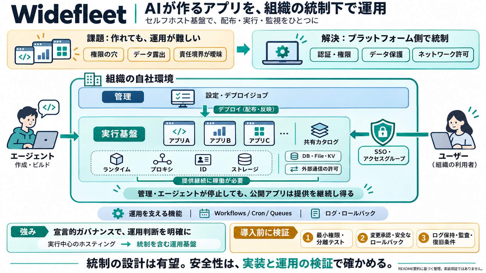

Self-hosting: Widefleet
Platform & apps : Run the management service, deployment agent and app runtimes in your environment. Company identity…

Platform & apps : Run the management service, deployment agent and app runtimes in your environment. Company identity…
Header forwarding passes `X-Fleet-Forward-` headers from a Fleet API run request to the agent’s custom MCP servers on ea…
flowchart LR subgraph Clients["Operators & external agents"] UI["Admin UI — Livewire 4 + Alpine"] MCPCLI["MCP clients (C…
Surveys and forecasts StacklokState of Model Context Protocol in Software 2026Jan 2026 · surveyed Dec 2025 GartnerGar…
``` # Deploy Fleet in your own AWS account module "fleet" source"github.com/fleetdm/fleet-terraform" version"~> 8.0" vpc…